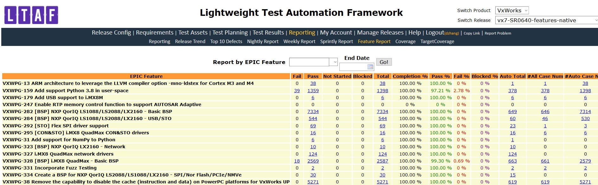
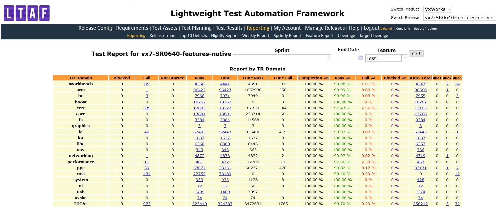
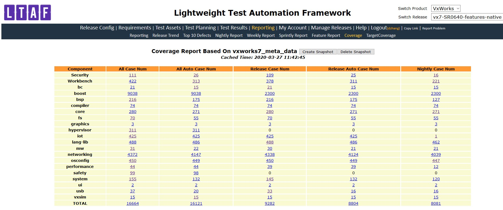
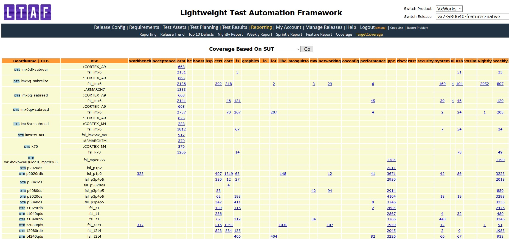
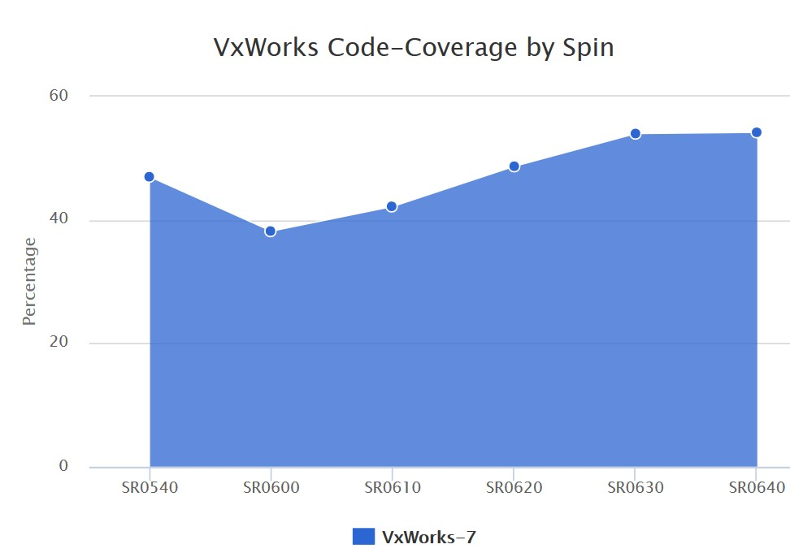

Test Process Guideline¶
This document provides guidelines for feature testing, release testing, nightly testing, weekly testing, sprint testing, EAR, CR testing, test coverage, test criteria and test defect related policy.
Feature Testing¶
The new feature testing, mainly include what will be tested (feature test plan) and when the test should be finished according to the release schedule. Feature delivery/entry criteria follow release criteria.
Feature Test Plan¶
Feature test plan is required for features which need create new TCs, for those features which could be covered by exist regression tests the test plan is optional
Feature test plan must follow VxWorks feature test plan template
Feature test plan must be reviewed with code collaborator; reviewer need involve Dev, Test, PM, EPM and other related stakeholders
Feature test plan must be finished and reviewed before feature merge into integration branch
Feature test plan document link should be added into Jira feature test plan field
Feature Test Report¶
Feature test result must be imported into LTAF before the feature merged into integration branch
New feature test result includes new feature test and regression test, both test results could be imported into LTAF and show out in ERPT

Feature Test Case Delivery¶
Test case for new feature should be created according to test case user guidelines and add test case meta data according to meta data guideline
New feature test case delivery will be tracked with LTAF test case report release by release
Release Testing¶
The release testing, mainly include what will be tested (release test strategy) and when the test should be finished (release test plan in LTAF) according to the release schedule. Release test exit criteria refer to release GA criteria.
Release testing include regression testing, new feature integration testing and system testing (all testing are using features track in Jira) and the test covered Vx7, WB, Compiler, HV etc.
Release testing will start after spin generated with all features included
Release testing is fixed duration (currently 3 weeks test cycle)
Release testing is tracked with Jira epics and LTAF report
Release test plan will be created in LTAF before the release test start
Release test status update report will be sent to “vx7-project” periodically
Performance and footprint report will provide by the end of the second week of the release test cycle for PT and related stakeholders for review
Release summary document will be created 1 week after GA and upload to VxWorks document as code website
CR and EAR release test report should be in LTAF and ERPT
Release Test Strategy¶
Release test strategy is required for each SR release
Release test strategy must follow VxWorks release test strategy template
Release test strategy must be ready for review 2 weeks before release testing started
Release test strategy must be reviewed with code collaborator, involve Dev lead, Test lead, PM, EPM and related stakeholders
Release test strategy must be upload into Jive VxWorks test space
Release Test Report¶
Release test results need to be reviewed by the key stakeholders (e.g., Architects, Development and Test Leads)
Release test result must be imported into LTAF and show out in ERPT
For EAR/CR, test strategy and test plan are optional, test result need in LTAF and ERPT

Integration Testing¶
Integration testing includes:
Nightly regression test
Weekly regression test
Sprint regression test
New test cases for new features will be added into nightly, weekly or sprint regression test
Nightly Test¶
Nightly Test Strategy¶
Full nightly test (include 5As and real target) on native spin
5As nightly test on both native and Helix spin
Test case defect policy¶
Test case issue will be reported with Jira defect and follow Defect Management process
Test case type defined in test case meta data guideline
Test Coverage and Improvement¶
Test improvements are tracked with Jira epics and follow agile development process.
Test case coverage and code coverage will be measured as below:
Test case coverage report will be generated in LTAF and tracked release by release

Target coverage report will be generated in LTAF and tracked release by release (Native only)

VxWorks code coverage data will be generated via Simics tool (Native only)
http://pek-cc-pb08l.wrs.com/vxtest/vxtest1/LOG_VX7/Vx-7_CodeCoverage/report_SR06xx.html

Test Log Backup Policy (Native only)¶
Test logs will follow company IT back up policy, all test logs will be backed up by IT.
VxWorks 7 new feature and release test logs location: http://pek-cc-pb08l/vxtest/vxtest1/LOG_VX7/
VxWorks 7 Test Release and Feature test log backup policy: https://jive.windriver.com/docs/DOC-84463
References¶
Change Log¶
Date |
Change Request ID |
Version |
Change By |
Description |
05/20/2020 |
N/A |
0.1 |
Shree Vidya Jayaraman |
Initial Draft |
08/04/2020 |
N/A |
0.3 |
Shree Vidya Jayaraman |
Updates based on kitty’s feedback |